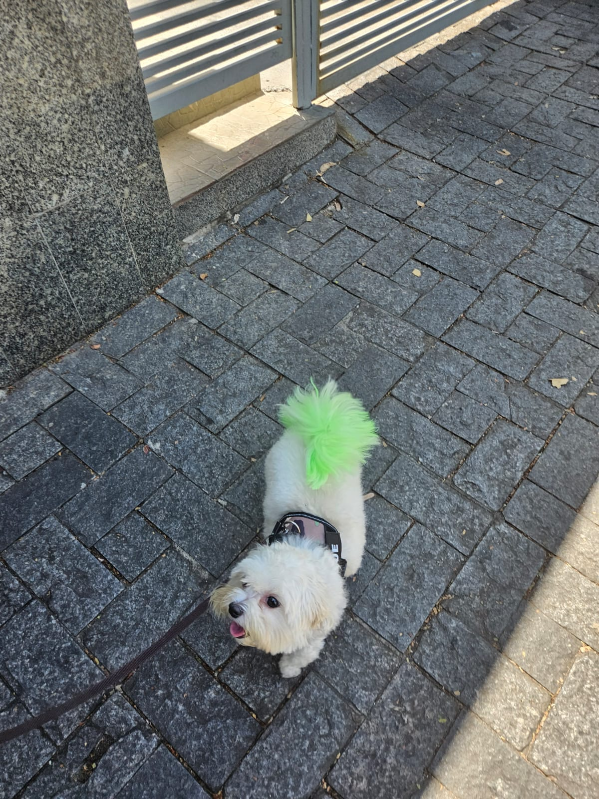

Em agosto de 2023, chegou em casa a coisa mais fofinha do mundo o Duque, depois de uma viagem de 1h30 ida e volta ele chegou. Depois de 19 anos pedindo um cachorrinho finalmente eu tinha um para poder chamar de meu. Era muito pequenininho a ponto de caber na palma da mão.
Depois de todas as vacinas ele finalmente pode passear no chão por conta própria, pois antes ele só podia passear no colo, uma vez que não é recomendado o cachorrinho ter contato com possíveis áreas contaminadas, como o chão, antes das vacinas. Ao passear ele descobriu um mundo novo e ficou todo feliz com a nova descoberta. Porém nem tudo são flores... (Clique no botão para continuar a história)

Atualmente, ele já tá um menino grandinho! Prendeu vários truques, conheceu muitos amigos e continua amando passear!
